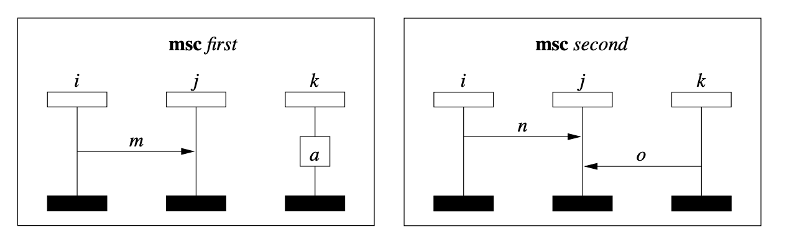
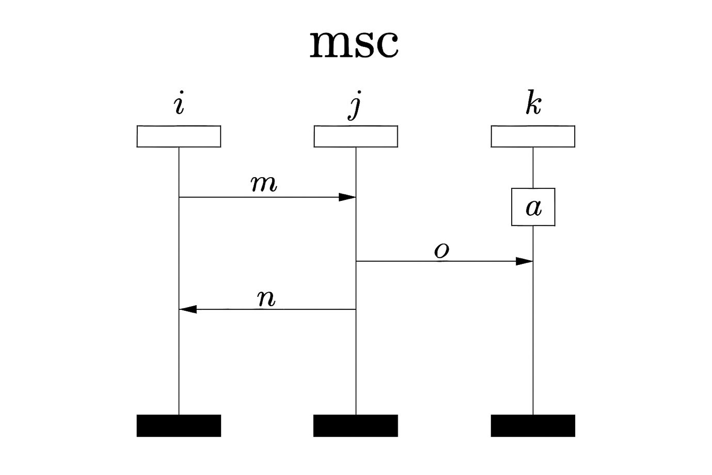
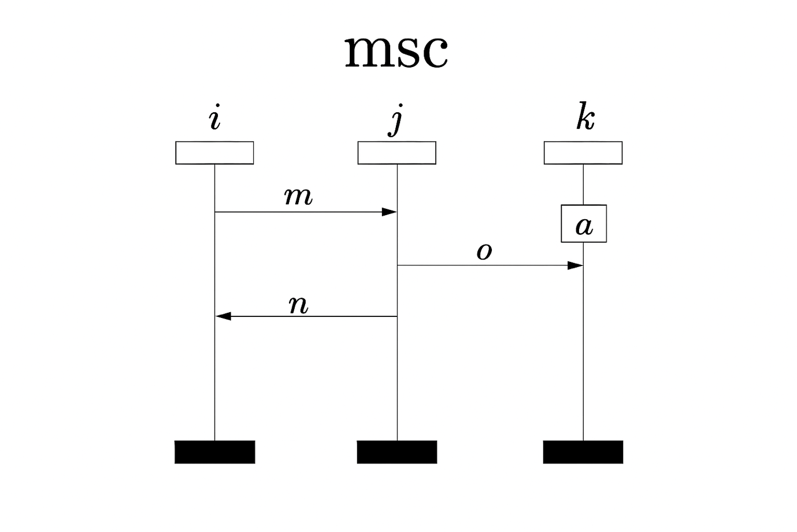

Annotations / GPT-5.4-Thinking Deep / Example 5.docx
Question: Consider the following two message sequence charts labelled "first" and "second"; compose them horizontally and draw the resulting composed message sequence chart.

Answer:
et us first restate what is in each MSC, based on the picture.
msc first
Instances: i, j, k
Message m from i to j
A local action a on instance k
No ordering relation between m and a (they are concurrent)
msc second
Instances: i, j, k
Message n from i to j
Message o from k to j
The send of n happens before the receive of o on j (since they are vertically ordered on j)
Horizontal composition
Horizontal composition places the two MSCs side by side and combines them into a single MSC with the same instances.
Key semantic points:
All ordering relations inside each MSC are preserved.
No new ordering relations are introduced between events coming from different MSCs.
Thus, every event of msc first is concurrent with every event of msc second, unless they are already ordered within the same MSC.
Resulting composed MSC (ASCII sketch)
msc first || second
i j k
+-----+ +-----+ +-----+
| | |
|---- m --------->| |
| | |
| | | [a]
| | |
|---- n --------->|<-------- o -----|
| | |
===== ===== =====
Ordering summary
Preserved orderings:
send(m) ≺ recv(m)
send(n) ≺ recv(n)
send(o) ≺ recv(o)
On instance j (from msc second):
recv(n) ≺ recv(o)
No ordering between:
Any event of msc first (m, a) and any event of msc second (n, o)
m and a
n and o except as imposed on j
If you like, I can also give the formal partial order or discuss linearizations (traces) of the composed MSC.

Please draw the resulting of MSC.
The resulting horizontally composed MSC should have the same three instances i, j, and k, with the behaviour of both MSCs superimposed while preserving their internal orders.
A clean textual sketch is:
Plain Text
msc first || second
i j k
+-----+ +-----+ +-----+
| | |
|---- m --------->| |
|---- n --------->| |
| | |
| |<-------- o -----|
| | | [a]
| | |
===== ===== =====
Show more lines
So the composed chart contains:
m : i → j
n : i → j
o : k → j
local action a on k
with the local ordering from second preserved on j, namely:
recv(n) ≺ recv(o)
and the local action a from first remaining on instance k.
Task type: Composition
Judgment: Incorrect
Question: What is the order between sending m and receiving o in the composed diagram.
Answer:
In the horizontally composed MSC, there is no ordering constraint between
sending m (from instance i to j in msc first), and
receiving o (at instance j from k in msc second).
Formally, their relation is:
$$send(m)\text{\:\,} \parallel \text{\:\,}recv(o) $$
Explanation
Horizontal composition preserves only the internal orders of each MSC.
send(m) belongs to msc first.
recv(o) belongs to msc second.
No rule of horizontal composition introduces ordering between events coming from different MSCs.
Although both events involve instance j, they come from different MSCs, so no causal relation is implied.
✅ Conclusion:
Sending m and receiving o are concurrent (unordered) in the composed diagram.
Task type: Composition
Judgment: Correct
Question:
Please consider the original two MSCs labelled "first" and "second", given here again. Please compose them vertically (by putting "first" on top and "second" at the bottom). Please draw the resulting composed diagram
Answer:

Here is the intended vertical composition of first ; second, with first above second:
Plain Text
msc first ; second
i j k
+-----+ +-----+ +-----+
| | |
|------ m --------------->| |
| | |
| | [ a ]
| | |
| | |
|------ n --------------->| |
| |<-------------- o -------|
| | |
===== ===== =====
Show more lines
So the composed MSC contains:
from first:
m : i → j
local action a on k
from second:
n : i → j
o : k → j
with all events of first ordered before all events of second.
Task type: Composition
Judgment: Incorrect
Question:
What is the order between internal event a and receiving o in the vertically composed MSC.
Answer:
In the vertically composed MSC first ; second, the internal event a is in msc first, while receiving o is in msc second.
Since vertical composition puts all events of first before all events of second, the ordering is:
$$a\text{\:\,} \prec \text{\:\,}recv(o) $$
So:
The internal event a strictly precedes the receiving of o.
Even though a occurs on instance k and recv(o) occurs on instance j, vertical composition introduces a global sequential ordering from the first MSC to the second MSC.
Task type: Composition
Judgment: Correct